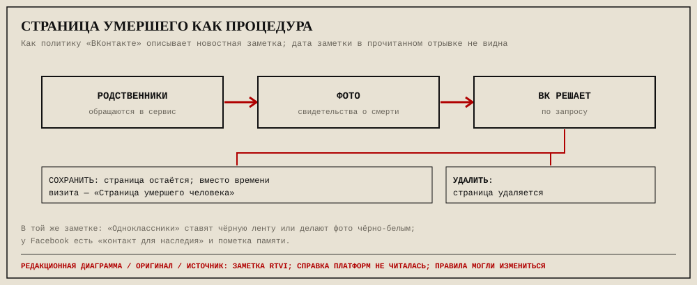
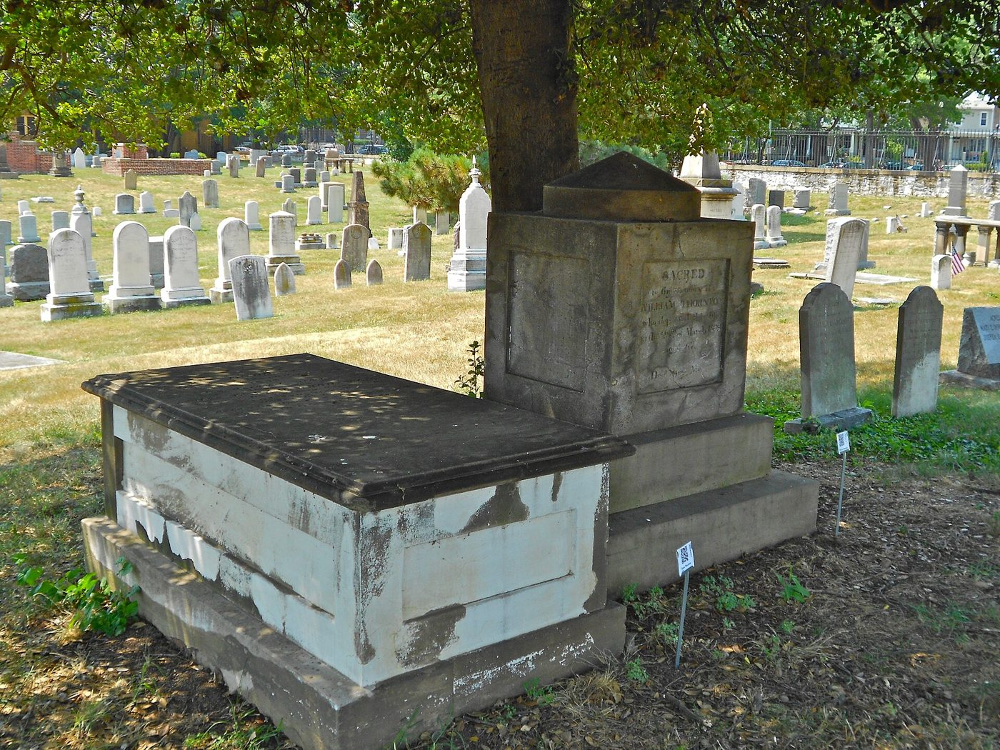

ТОМ IV · ЛИСТ X · 05 / 05
ЦИФРОВАЯ ЗАГРОБНАЯ ЖИЗНЬ
Онлайн-мемориалы, аккаунты умерших и что утверждают источники
Три источника об аккаунтах умерших, онлайн-скорби и аватарах умерших; все прочитаны на уровне аннотации или новости и названы так.
2020–2025 · Русскоязычный интернет · Онлайн-поминовение в России
X / 01
Больше мёртвых, чем живых
А. Сергеева, Р. Герлит и Х. Крцмар проанализировали 33 соцсети и онлайн-сервиса, опросили 173 пользователей интернета и провели интервью с экспертами, взяв Россию в качестве примера. Их аннотация ожидает, что в ближайшие десятилетия на сервисах будет больше умерших пользователей, чем живых, что аккаунты и данные сохранятся, умершие будут получать приглашения и поздравления, а наследникам будет трудно найти все аккаунты и получить доступ к данным.
У листа только аннотация. Строка «больше мёртвых, чем живых» — прогноз, а выборка опроса здесь неизвестна.
X / 03
Аватары и горе
Исследователи НИУ ВШЭ в Нижнем Новгороде Т. Хусяинов и Е. Урусова, как сообщается, говорят, что цифровые следы могут поддерживать горе, сохраняя ощущение связи, и что те же инструменты могут усиливать тревогу, откладывать принятие утраты и повышать риск ретравматизации. Они описывают ИИ-аватары умерших, которые могут воспроизводить голос и привычки, но и допускать ошибки, с сравнением с созданием Франкенштейна.
Оба эффекта выдвигают вместе сами исследователи, и атлас оставляет оба открытыми. У листа новость университета, а не статья. В заметке нет разбора российского права.
X / 0x
Что платформы сообщают о своих правилах
В новости сообщается, что «ВКонтакте» помечает или удаляет страницу умершего пользователя по просьбе родственников, которые присылают фотографию свидетельства о смерти. Если страница сохраняется, вместо времени последнего визита появляются слова «Страница умершего человека». В той же новости сказано, что с 2011 года страницу ВК можно было сохранить без изменений или удалить, что «Одноклассники» добавляют чёрную ленточку или делают фото чёрно-белым, а у Facebook есть «хранитель» и памятная отметка.
Это сообщение о политике платформы на дату новости, которую прочитанная выдержка не показывает. Собственные справочные страницы платформ не читались, а такие правила меняются. Новость показывает, что страница умершего — категория, для которой платформа выработала процедуру, где ключом служит документ.
X / 05
Источник, материал и границы
| Источник | Материал | Граница |
|---|---|---|
| Сергеева, Герлит, Крцмар (2020) | 33 сервиса, 173 пользователя, интервью с экспертами | Только аннотация; выборка неизвестна |
| Линден (диссертация) | Три мемориальных сайта; виртуальная этнография | Только аннотация; год не указан; теоретические утверждения |
| Хусяинов и Урусова (2025) | Утверждения исследователей о горе и аватарах | Новость, а не статья |
| Новость о ВК, «Одноклассниках», Facebook | Процедуры платформ для страниц умерших | Новость, год не показан; политика меняется |


Аппарат источники · связанные листы · термины
Источники этого листа
- sergeeva2020 Сергеева А., Герлит Р., Крцмар Х. — Digital inheritance in Russia (2020)
- linden-online-death Линден К. — Death Online in Contemporary Russia: Memory, Forgetting and the Connective Presence of Mourning on the Internet (n.d.)
- hse-digital-grief2025 Служба новостей НИУ ВШЭ со ссылкой на Т. Хусяинова и Е. Урусову — Hi-Tech Grief: HSE Researchers Explore the Pros and Cons of Digital Commemoration (2025)
- rtvi-vk-dead RTVI news desk, citing TASS and the VK press service — «ВКонтакте» начала помечать страницы умерших пользователей по просьбе их родственников (n.d.)
Ссылки, даты обращения и ограничения — в списке источников.